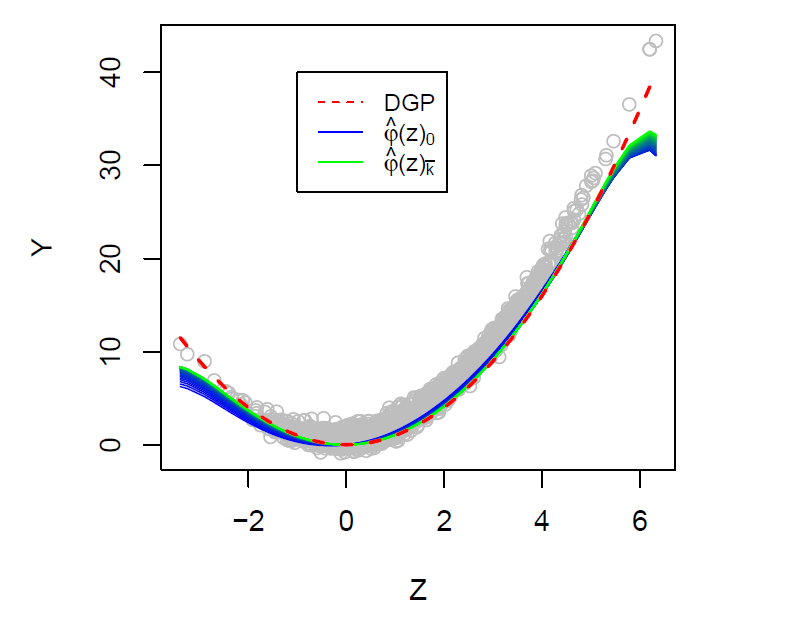
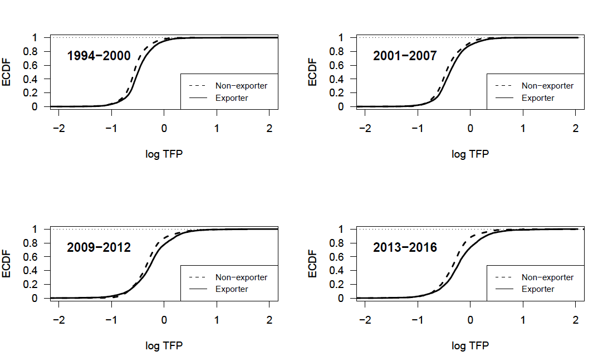

Research
Peer-reviewed publications
Nonparametric instrumental regression with two-way fixed effects, 2023, Journal of Econometric Methods. [Code]
More
This paper presents a novel nonparametric instrumental estimator while controlling for unobserved additive fixed effects. In particular, I consider a model such as
\[ Y_{it} = \varphi(Z_{it}) + \xi_{i} + \delta_t + U_{it}, \]
where \(Z_{it}\) is supposed to be correlated with both the unobserved individual and temporal effects, \(\xi_i\) and \(\delta_t\), and with the the error term \(U_{it}\). Such settings are typical when estimating market equilibrium models as, for instance, product demand or supply, where \(Y_{it}\) and \(Z_{it}\) might represent output prices and quantity and \(\xi_i\) and \(\delta_t\) unit and time specific shocks. To consistently estimate the nonparametric conditional mean function \(\varphi\) one has to control for the simultaneity bias, occurring when prices and output quantity are jointly determined, as well as for the unobserved fixed effects. For that purpose, I combine the Landweber-Fridman regularization for the IV-part with a locally-weighted nonparametric fixed effects estimator. A Monte Carlo simulation reveals good finite sample behavior of the novel estimator and confidence intervals are provided by the application of the wild residual block bootstrap.
The figure shows the regularized solution path of the nonparametric instrumental estimator while controling for two-way fixed effects. The estimator is applied on simulated data where the conditional mean function \(\varphi\) is consistently estimated after 44 iterations, depicted by the green line.

Productivity dynamics and exports in the French forest product industry. 2022, Journal of Forest Economics, 37(1), 1-71.
More
This paper investigates aggregate productivity dynamics of the French forest product industry based on firm-level data from 1994 to 2016. The main objectives of the paper are to investigate aggregate productivity growth in the industry, while taking market entry and exit into account. Further, aggregate productivity growth is investigated with respect to firms’ export status and with respect to their domestic and export economic activity. Decomposing the productivity growth into the contribution of incumbent, entering, and exiting firms, the results show a considerable slowdown during the economic crisis from 2007 on, which is mainly induced by decreasing productivity improvements and inefficient resource allocation among incumbent firms. Moreover, the study shows that exporters contribute more to aggregate productivity growth than non-exporters. However, investigating the contribution of firms’ domestic and export economic activities on aggregate productivity growth, I find that the aggregate productivity growth is mainly related to firms’ domestic economic activity.
Download here the latest working paper version.

The figure shows the empirical cumulative distribution function (ECDF) of exporting and non-exporting firms’ productivity. For all periods exporters of the French forest product industry reveal higher productivity compared to non-exporting firms.
Working papers
Productivity, markups, and reallocation: Evidence from French manufacturing firms from 1994 to 2016 (R&R to Journal of Productivity Analysis)
More
Soon to be updated.
Cournot equilibrium and welfare with heterogenous firms (with B. Koebel)
More
Soon to be updated.
Work in progress
Business dynamism and high-growth firms in Germany (with S. Gottschalk, J. Miranda, and S. Murmann)
Is age golden? Growth, innovation, and survival of start-ups by seniorpreneuers (with S. Gottschalk H. Hottenrott, S. Murmann, E. Rodepeter)
Policy advice and technical reports
Ex-ante analysis of the German start-up subsidy Programm “INVEST” (with various ZEW researchers and Technopolis Deutschland GmbH, on behalf of the German Federal Ministry of Economic Affairs and Climate Action, 2022)
The effect of the German minimum wage on conditions of competition (with A. Kann, M. Lubczyk and S. Murmann, on behalf of the German minimum wage commission, 2022)
- Media coverage: Tagesschau, Süddeutsche Zeitung
Industry and productivity dynamics in Germany (with J. Bersch, N. Hahn, and G. Licht, ZEW research project for the Bertelsmann Stiftung, 2021)
- Media coverage: Frankfurter Allgemeine Zeitung
Book chapters
Dynamisierung der Wirtschaft: Eine Herausforderung für die Industriepolitik, Deutsch-Französisches Institut (dfi), Frankreich Jahrbuch 2022 - Politik der Zeitenwende? Europa im Umbruch, Frankreich Jahrbuch, Bd. 36 , Nomos Verlagsgesellschaft 69-88 (with G. Licht)